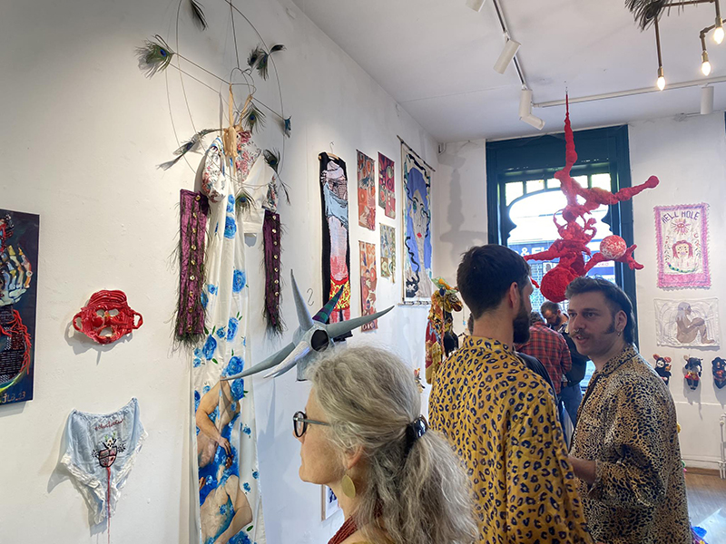

E²/Sterput - Galerie d'art associative
Exposition du 18 septembre au 12 octobre 2025 Vernissage le 17 septembre
À propos
Projet artistique associatif créé en 2013 et installé à Bruxelles dans un lieu dénommé le Sterput, l’asbl E² organise expositions, ateliers créatifs, focus sur la micro-édition, et autres manifestations culturelles tout au long de l’année. Espace de rencontre et de diffusion d’artistes émergent·es et confirmé·es venu·es de tous horizons, le Sterput promeut un art contemporain alternatif et hors normes. Le projet E² propose une vision de l’art différente, brute et aiguisée, mais aussi populaire et accessible, en visant l’accès à la culture pour toutes et tous. Art figuratif non conforme et singulier, le Sterput croit en la puissance émotionnelle des images. L’asbl E² s’exprime également à travers l’édition de livres d’artistes imprimés et façonnés à la main à Bruxelles en série limitée. Un ouvrage est publié à l’occasion de chaque exposition. L’espace librairie du Sterput présente quant à lui une fine sélection de créations artistiques variées : zines, livres, affiches… Basée sur un fonctionnement associatif non-lucratif, l’asbl E² est composée d’une équipe de bénévoles œuvrant pour une économie locale, respectueuse, solidaire et collaborative. Le Sterput est l’espace d’exposition et de distribution de l’asbl E², ouvert du vendredi au dimanche, et le jeudi uniquement pour les vernissages à la Place du Jeu de Balle 68, 1000 Bruxelles.
Caroline Sury
NO BODY RULES
Caroline Sury est une figure majeure de la scène graphique alternative, cofondatrice de L’Association et activiste visuelle infatigable. Avec ses encres noires, ses silhouettes libres et ses récits sans concession, elle creuse les marges — intimes, sociales, sexuelles — et donne une voix aux corps oubliés. Son œuvre, radicale et sensible, est une clameur graphique contre les normes et les silences.

Contact
Sterput [ASBL E²]
E²/Sterput - Galerie d'art associative Place du Jeu de Balle 68 1000 - Bruxelles info@sterput.org
Horaire
Vendredi, samedi et dimanche de 11h à 18h Jeudi 18h-21h uniquement pour les vernissages Et aussi sur rendez-vous Voir agenda
Soutien
Avec le soutien de la COCOF, de la Ville de Bruxelles et de la FWB
Follow